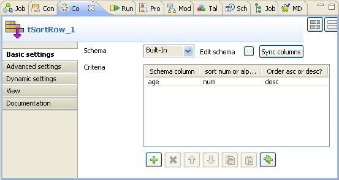
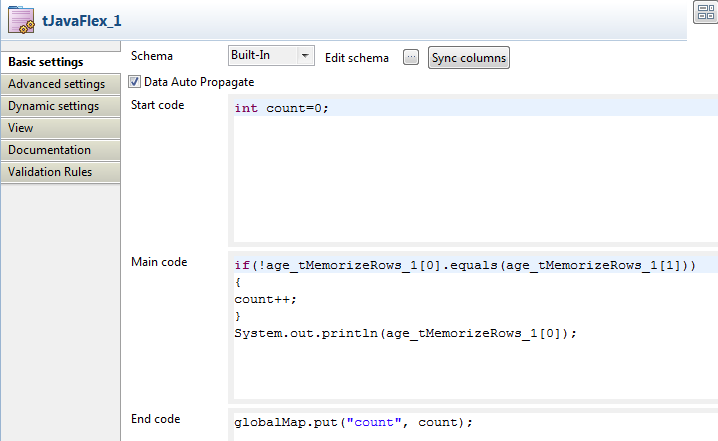

|
Component family |
Misc | |
|
Function |
tMemorizeRows temporarily memorizes an array of incoming data in a row by row sequence and instantiates this array by indexing each of the memorized rows from 0. The maximum number of rows to be memorized at any given time is defined in the Basic settings view. | |
|
Purpose |
tMemorizeRows memorizes a sequence of rows that pass this component and then allows its following component(s) to perform operations of your interest on the memorized rows. | |
|
Basic settings |
Schema and Edit schema |
A schema is a row description, i.e., it defines the number of fields that will be processed and passed on to the next component. The schema is either built-in or remote in the Repository. If you are using Talend Open Studio for Big Data, only the Built-in mode is available. - Click Edit Schema to make changes to the schema. Note that if you make changes, the schema automatically becomes built-in. - Click Sync columns to retrieve the schema from the previous component connected in the Job. |
|
|
|
Built-in: The schema will be created and stored locally for this component only. Related topic: see Talend Open Studio User Guide. |
|
|
|
Repository: You have already created the schema and stored it in the Repository, hence can be reused in various projects and job designs. Related topic: see Talend Open Studio User Guide. |
|
|
Row count to memorize |
Define the row count to be memorized. |
|
|
Columns to memorize |
Select the columns to be memorized from the incoming data schema. |
|
Advanced settings |
tStatCatcher Statistics |
Select this check box to gather the Job processing metadata at a Job level as well as at each component level. |
|
Usage |
This component can be used as intermediate step in a data flow or the last step before beginning a subjob. Note: You can use the global variable NB_LINE_ROWS to retrieve the value of the Row count to memorize field of the tMemorizeRows component. | |
|
Connections |
|
Outgoing links (from one component to another): Row: Main Trigger: Run if; On Component Ok; On Component Error.
Incoming links (from one component to another): Row: Main;
For further information regarding connections, see Talend Open Studio User Guide. |
This scenario counts how many different ages there are within a group of 12 customers. In this scenario, the customer data is generated at random.

This Job uses 5 components which are:
tRowGenerator: it generates 12 rows of customer data containing IDs, names and ages of the 12 customers.
tSortRow: it sorts the 12 rows according to the age data.
tMemorizeRows: it temporarily memorizes a specific number of incoming data rows at any give time and indexes the memorized data rows.
tJavaFlex: it compares the age values of the data memorized by the preceding component, counts the occurrences of different ages and displays these ages in the Run view.
tJava: it displays the number of occurrences of different ages.
To replicate this scenario, proceed as follows:
Drop tRowGenerator, tSortRow, tMemorizeRows, tJavaFlex and tJava on the design workspace.
Connect tRowGenerator to tSortRow using the Row > Main link.
Do the same to link together tSortRow, tMemorizeRows and tJavaFlex using the Row > Main link.
Connect tRowGenerator to tJava using the Trigger > OnSubjobOk link.
Procedure 16.1. Configuring the tRowGenerator component
Double click the tRowGenerator component to open the its editor.

In this editor, click the plus button three times to add three columns and name them as: id, name, age.
In the Type column, select Integer for id and age.
In the Length column, enter 50 for name.
In the Functions column, select random for id and age, then select getFirstName for name.
In the field of Number of Rows for RowGenerator, type in 12.
In the Column column, click age to open its corresponding Function parameters view in the lower part of this editor.

In the Value column of the Function parameters view, type in the minimum age and maximum age that will be generated for the 12 customers. In this example, they are 10 and 25.
Procedure 16.2. Configuring the tSortRow component
Double click tSortRow to open its Component view.
In the Criteria table, click the plus button to add one row.
In the Schema column column, select the data column you want to base the sorting operation on. In this example, select age as it is the ages that should be compared and counted.
In the Sort num or alpha column, select the type of the sorting operation. In this example, select num, that is numerical, as age is integer.
In the Order asc or desc column, select desc as the sorting order for this scenario.
Procedure 16.3. Configuring the tMemorizeRows component
Double click tMemorizeRows to open its Component view.

In the Row count to memorize field, type in the maximum number of rows to be memorized at any given time. As you need to compare ages of two customers for each time, enter 2. Thus, this component memorizes two rows at maximum at any given moment and always indexes the newly incoming row as 0 and the previously incoming row as 1.
In the Memorize column of the Columns to memorize table, select the check box(es) to determine the column(s) to be memorized. In this example, select the check box corresponding to age.
Procedure 16.4. Configuring the tJavaFlex and tJava components
Double click tJavaFlex to open its Component view.
In the Start code area, enter the Java code that will be called during the initialization phase. In this example, type in
int count=0;in order to declare a variable count and assign the value 0 to it.In the Main code area, enter the Java code to be applied to each row in the data flow. In this scenario, type in
if(!age_tMemorizeRows_1[0].equals(age_tMemorizeRows_1[1])) { count++; } System.out.println(age_tMemorizeRows_1[0]);This code compares two ages memorized by tMemorizeRows each time and count one change every time when the ages are found different. Then this code displays the ages that have been indexed as 0 by tMemorizeRows.
In the End code area, enter the Java code that will be called during the closing phase. In this example, type in
globalMap.put("count", count);to output the count result.Double click tJava to open its Component view.

In the Code area, type in the code
System.out.println("Different ages: "+globalMap.get("count"));to retrieve the count result.